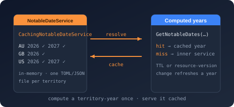

Namespace Bodu.Globalization.Calendar.Caching

Purpose
Bodu.Globalization.Calendar.Caching is the read-through caching layer for the
Bodu.Globalization.Calendar notable-date engine. Rather than building caching into
the engine, it ships CachingNotableDateService, a decorator that implements
the same INotableDateService contract and serves each requested civil year from an
INotableDateCache, recomputing a year through the wrapped service only on a
miss. Consumers hold the same interface either way; only when a year is computed changes.
The cache unit is one territory's occurrences for one whole civil year. A range is decomposed into the years it spans, each year is served from the cache when a fresh, version-matching entry exists, and the assembled occurrences are clipped to the requested window. Freshness has two independent triggers the cache evaluates on every call: a time-to-live (default 30 days, with optional deterministic jitter and access-triggered refresh-ahead), and a resource-version token that invalidates every year computed under a previous resource — derived automatically from an observed INotableDateResourceProvider, so a reload forces a recompute regardless of the time-to-live. Concurrent cold misses for the same year coalesce onto one computation.
The core package ships the in-memory and per-territory TOML / JSON file backends; two add-on packages supply durable,
shareable storage over the same contract and namespace — Bodu.Globalization.Calendar.Caching.Sqlite
(SqliteNotableDateCache) and
Bodu.Globalization.Calendar.Caching.Distributed (DistributedNotableDateCache
over any IDistributedCache, Redis included). Every backend applies the same freshness, validity, version-matching,
merge, and ordering rules, and every backend is best-effort by default: a storage fault surfaces as an empty read or a
skipped write, never as an exception that breaks date resolution.
All dependency-injection registration lives in the Bodu.Globalization.Calendar namespace, so a single
using Bodu.Globalization.Calendar; makes AddCachedNotableDateService, AddSqliteNotableDateCache,
AddDistributedNotableDateCache, AddRedisNotableDateCache, and AddNotableDateCacheWarmup available. There are no
separate *.DependencyInjection packages.
Static documentation
- Introduction — the package family and which backend to pick, the decorator, the cache unit and freshness model, the storage contract, headline types, and the DI registrations.
- Core concepts — decorator vs service, cache key and unit, hit / miss / coalesced flight / refresh-ahead, time-to-live vs resource version, warm-up, write status, storage failure policy, backend classes, observability, thread safety and lifetime.
- Getting started — install and minimal samples: in-memory, TOML file, DI with
appsettings.json, SQLite, Redis, warm-up, and a customINotableDateCache. - Caching notable dates guide — worked patterns, freshness tuning, observability, and troubleshooting.
- Calendar dependency injection guide — the
AddNotableDateService/AddReloadableNotableDateServiceregistrations the decorator wraps.
Key types
Service and decorator
- CachingNotableDateService — the decorator. Constructed over an inner
INotableDateService, anINotableDateCache, and aNotableDateCachingOptions, with an optionalINotableDateResourceProviderversion source,TimeProvider,ILoggerFactory, andownsCacheflag. Implements everyINotableDateServicemember (the filtered overloads apply the filter after assembly; discovery methods delegate) and addsWarm(territories, firstYear, lastYear). Disposable; disposes the cache only when it owns it.
Contract
- INotableDateCache — the storage contract:
GetYear(territory, year, resourceVersion, ttl, asOf)returns a fresh, version-matching entry ornull;StoreYear(entry, ttl, asOf)merges a computed year, prunes stale and superseded-version entries, and reports a write status;Clear()empties the cache best-effort. Implementations preserve occurrence order and degrade rather than throw on storage faults. - NotableDateCacheEntry — the cache unit:
Territory,Year,ResourceVersion, the orderedOccurrences,ComputedAtUtc, andIsFresh(asOf, ttl). An empty occurrence list is a valid, cacheable result. - NotableDateCacheWriteStatus —
Stored(persisted),Skipped(a deliberate no-op cache),Failed(a swallowed storage error; nothing persisted).
Options
- NotableDateCachingOptions — the decorator's options:
Ttl(30 days),TtlJitterandRefreshAheadFraction(both0, range[0, 1)),ResourceVersion(the fixed token used when no provider is observed),CacheDirectory(for the default file cache),CacheHitLogLevel/CacheMissLogLevel(Information);Validate()throws,TryValidate(out error)backsValidateOnStart. - NotableDateCacheOptions — the storage-agnostic base of every backend's options:
ThrowOnStorageFailure(rethrowIOException/UnauthorizedAccessExceptioninstead of degrading) andValidateStorageOnStart(probe the store at construction or host start), bothfalseby default; virtualValidate()/TryValidate(out error). - FileNotableDateCacheOptions — adds
CacheDirectory(null→bodu-notable-datesunder the system temporary path). - SqliteNotableDateCacheOptions —
DatabaseFilePathor a fullConnectionString(precedence; at least one required),UseWriteAheadLogging(true),BusyTimeout(five seconds). - DistributedNotableDateCacheOptions —
KeyPrefix(keys are<prefix>notable-dates:<TERRITORY>) andEntryExpirationMargin(one hour, added to the time-to-live as each blob's server-side absolute expiration;nulldisables it). - NotableDateCacheWarmupOptions — the startup warm-up:
Territories, a rollingYearsBehind(0) /YearsAhead(1) window around the current UTC year, or pinnedFirstYear/LastYear.
Backends
- NotableDateCacheBase<TOptions> — the storage-agnostic mechanism behind every shipped backend: territory normalization, read-time freshness and version filtering, and write-time merge-and-prune under a per-territory lock, over a
protected internalReadEntries/WriteEntriesseam opened to the companion packages. A third-party store implementsINotableDateCachedirectly. - FileNotableDateCacheBase — the file mechanism: one file per territory under
CacheDirectory, atomic temp-and-move writes, a last-write-time parse memo, rate-limited degradation warnings. - InMemoryNotableDateCache — process memory; nothing persisted.
- TomlNotableDateCache, JsonNotableDateCache — one
<TERRITORY>.toml/.jsonfile per territory; malformed content reads as empty and is repaired by the next write. - SqliteNotableDateCache — a
notable_datestable keyed by(territory, year, version)with a single-rowGetYearoverride and a keep-alive connection; disposable. Registered withAddSqliteNotableDateCache. - DistributedNotableDateCache — one JSON blob per territory in any
IDistributedCache, stamped with a server-side expiration;Clearremoves only the keys the instance wrote. Registered withAddDistributedNotableDateCacheor the Redis convenienceAddRedisNotableDateCache. - NullNotableDateCache — the no-op cache (
NullNotableDateCache.Instance), for when caching is disabled.
Dependency injection and warm-up (namespace Bodu.Globalization.Calendar)
- NotableDateCachingExtensions —
AddCachedNotableDateService(configure?, cacheFactory?)andAddCachedNotableDateService(configuration, sectionName = "Calendar:NotableDateCache", configure?, cacheFactory?): decorates the registeredINotableDateServicein place (the previous registration becomes the inner service), builds and owns aTomlNotableDateCachewhen nocacheFactoryis supplied, observes a registeredINotableDateResourceProvider,TimeProvider, andILoggerFactory, and validates the options at host start. ThrowsInvalidOperationExceptionwhen no service is registered. - SqliteNotableDateCacheExtensions —
AddSqliteNotableDateCache(configuration?, sectionName = "Calendar:NotableDateCache:Sqlite", configure?): a singletonSqliteNotableDateCachealso exposed asINotableDateCache, with the storage probe wired intoValidateOnStartwhenValidateStorageOnStartis set. - DistributedNotableDateCacheExtensions —
AddDistributedNotableDateCache(configuration?, sectionName = "Calendar:NotableDateCache:Distributed", configure?)over the container'sIDistributedCache, andAddRedisNotableDateCache(configureRedis, configuration?, sectionName, configure?), which registers the Redis cache first. - NotableDateCacheWarmupExtensions —
AddNotableDateCacheWarmup(configuration?, sectionName = "Calendar:NotableDateCacheWarmup", configure?): a hosted service that warms the configured territories after the host starts without blocking it; no-ops with a warning when the registered service is not the caching decorator.
On-disk schema
- NotableDateCacheFile — the document the file caches and the distributed blob serialize:
Territory, anEntriesarray, and a flatOccurrencesarray. - NotableDateCacheYearRow — one row per cached year:
Year,Version,ComputedAtUtc; present even for a year with no occurrences. - NotableDateCacheOccurrenceRow — one flat scalar row per occurrence, carrying its
YearandVersionplus every NotableDate field, with the rule identity flattened toResourceId/NotableDateId/RuleIdand the category as its enum name. The SQLite backend stores the same rows as a JSON blob per year.
Example
using Bodu.Globalization.Calendar;
using Bodu.Globalization.Calendar.Caching;
// Wrap any INotableDateService — here a regional data pack — in the decorator over a per-territory TOML cache.
INotableDateService engine = AmericasCalendarData.CreateService("US");
using var calendar = new CachingNotableDateService(
engine,
new TomlNotableDateCache(new FileNotableDateCacheOptions { CacheDirectory = "/var/cache/notable-dates" }),
new NotableDateCachingOptions
{
Ttl = TimeSpan.FromDays(30),
RefreshAheadFraction = 0.75, // recompute a hot year in the background after 75% of the TTL
ResourceVersion = "us-holidays-2026.1", // bump after a data update; a resource provider derives this automatically
},
ownsCache: true);
// The first query computes and caches all of 2026; the next two are cache hits.
IReadOnlyList<NotableDate> year = calendar.Resolve(2026, "US");
IReadOnlyList<NotableDate> day = calendar.Resolve(new DateOnly(2026, 7, 4), "US");
IReadOnlyList<NotableDate> closures = calendar.Resolve(2026, "US-CA", NotableDateFilter.IsNonWorkingDay());
// Pre-pay the computations for next year as well.
int warmed = calendar.Warm(new[] { "US", "US-CA" }, 2026, 2027);
Under dependency injection, register the service first and decorate it in place; add the durable backends through their
own registrations and hand them to the decorator through cacheFactory:
using Bodu.Globalization.Calendar;
using Bodu.Globalization.Calendar.Caching;
using Microsoft.Extensions.DependencyInjection;
builder.Services.AddReloadableNotableDateService(AmericasCalendarData.LoadResource("US"));
builder.Services.AddSqliteNotableDateCache(builder.Configuration); // Calendar:NotableDateCache:Sqlite
builder.Services.AddCachedNotableDateService(
builder.Configuration, // Calendar:NotableDateCache
cacheFactory: sp => sp.GetRequiredService<INotableDateCache>());
builder.Services.AddNotableDateCacheWarmup(builder.Configuration); // Calendar:NotableDateCacheWarmup
Notes
- Order matters under DI.
AddCachedNotableDateServicedecorates whateverINotableDateServiceis registered at that point and throws when there is none;AddNotableDateCacheWarmupresolves the service at run time and no-ops (withEventId 4625) unless it is the caching decorator. Register service → cache backend → decorator → warm-up. - The add-on registrations do not replace the default cache.
AddSqliteNotableDateCacheandAddDistributedNotableDateCacheregister anINotableDateCache;AddCachedNotableDateServicestill builds a TOML file cache unless acacheFactoryresolves the registered one. - Results never change with the backend. Every backend applies the shared freshness (strict less-than), clock-skew (one minute), version-matching, merge, and ordering rules; only durability and sharing differ.
- Best-effort by default, strict on request. Storage faults degrade to misses and skipped writes with rate-limited
Warninglogs (EventId 4603file,4611SQLite,4621distributed) and always-incrementingstorage_failurescounters on theBodu.Globalization.Calendar.Caching[.Sqlite|.Distributed]meters.ThrowOnStorageFailurerethrows;ValidateStorageOnStartfails the host start on an unusable store. - Distributed writes are last-write-wins across processes, since
IDistributedCachehas no atomic read-modify-write; entries are recomputable, so this is acceptable for a best-effort cache.
Classes
CachingNotableDateService
An INotableDateService decorator that serves notable-date resolutions from an INotableDateCache, recomputing and caching a whole civil year on a miss and refreshing on a time-to-live or a resource-version change.
DistributedNotableDateCache
An INotableDateCache that persists computed years in any IDistributedCache — Redis, SQL Server, or an in-memory distributed cache — as one JSON blob per territory, expiring them through the same freshness and version mechanism as the other backends.
DistributedNotableDateCacheOptions
Configures a distributed INotableDateCache: the optional key prefix its per-territory blobs are namespaced under. The backing store itself is supplied through dependency injection as an IDistributedCache.
FileNotableDateCacheBase
Provides the file-storage mechanism for an INotableDateCache: one file per territory under a cache directory, atomic temp-and-move writes, a last-write-time parse memo, and best-effort degradation on storage failures. Derived types implement only the file extension and the serialization of a territory's entry list.
FileNotableDateCacheOptions
The options for a file-backed INotableDateCache, adding the storage directory to the storage-agnostic base.
InMemoryNotableDateCache
An INotableDateCache that stores computed years in memory for the lifetime of the instance, expiring them through the same freshness and version mechanism as the file caches.
JsonNotableDateCache
An INotableDateCache that persists computed years as JSON files, one file per territory.
NotableDateCacheBase<TOptions>
Provides the storage-agnostic mechanism for an INotableDateCache: territory normalization, read-time freshness and version filtering, and write-time merge-and-prune of per-year entries. Derived types implement only the persistence of a territory's entry list; this base prescribes no physical storage structure.
NotableDateCacheEntry
Represents one cached unit of notable-date resolution: every occurrence emitted within a single civil year for a single territory under a single resource version, together with the UTC instant the year was computed, which drives expiry.
NotableDateCacheFile
The root table for a persisted notable-date cache file, holding one territory's cached years as a flat pair of arrays: the per-year entry metadata and the occurrences that belong to those years.
NotableDateCacheOccurrenceRow
The persisted, flattened form of a single NotableDate occurrence, carrying its associating year and resource version alongside every field needed to reconstruct the record.
NotableDateCacheOptions
Provides the storage-agnostic options shared by every INotableDateCache. Storage-specific option types derive from this base to add their own location settings.
NotableDateCacheWarmupOptions
Configures the startup cache warm-up registered through AddNotableDateCacheWarmup: the territories to warm
and the span of civil years they are warmed over.
NotableDateCacheYearRow
The persisted metadata for one cached civil year: the year, the resource version it was computed under, and the UTC instant it was computed.
NotableDateCachingOptions
Configures a CachingNotableDateService: how long a computed year stays fresh, the resource-version token used when no resource provider is observed, the on-disk cache location, and the log levels of the per-lookup hit and miss diagnostics.
NullNotableDateCache
An INotableDateCache that stores nothing, used when caching is disabled.
SqliteNotableDateCache
An INotableDateCache that persists computed years in a SQLite database, expiring them through the same freshness and version mechanism as the in-memory and file caches.
SqliteNotableDateCacheOptions
Configures a SQLite-backed INotableDateCache: the location of the database computed years are persisted in and the connection-level concurrency settings applied on open.
TomlNotableDateCache
An INotableDateCache that persists computed years as TOML files, one file per territory.
Interfaces
INotableDateCache
Persists computed notable-date resolutions so an expensive per-year resolution need not be recomputed while it remains fresh, keyed by territory, civil year, and resource version.
Enums
NotableDateCacheWriteStatus
Reports the outcome of an StoreYear(NotableDateCacheEntry, TimeSpan, DateTimeOffset) write, distinguishing a durable success from a swallowed storage failure and from a deliberate no-op cache.